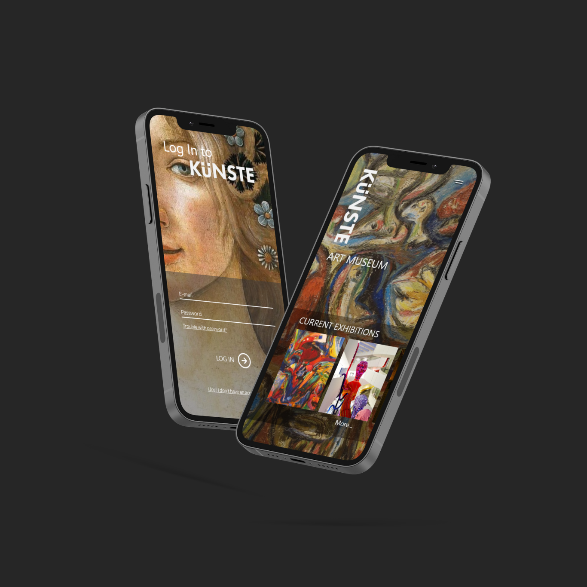
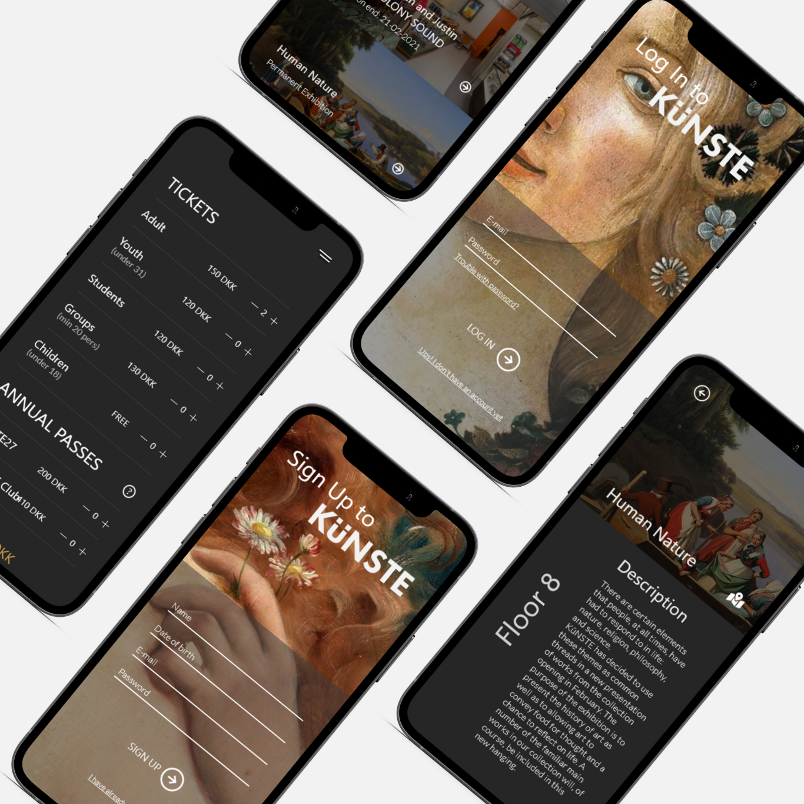

Concept
The Künste application is an interactive application made for a fictive museum that values innovation and the technological progress.
 Project Description
On my 3rd semester of the multimedia design education, we had to create an interactive user experience focused on mobile devices.
The Künste application takes its starting point from an already existing museum's app and is an example of how this app can be
improve and expand in order to retain visitors and grow as a business.